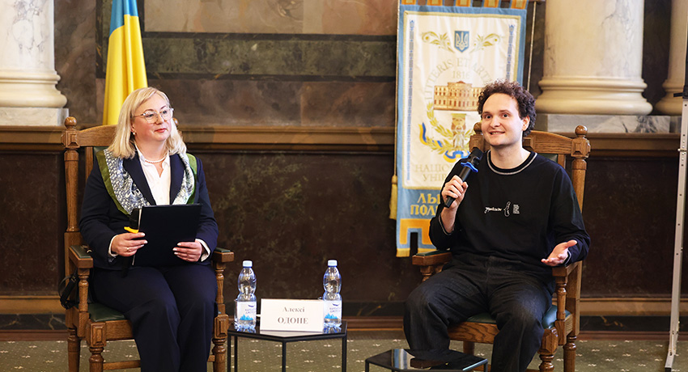
27 листоп. 2026, 7:45Новини університету
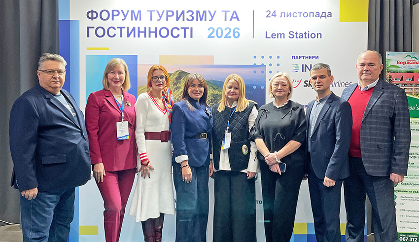
27 ЛИСТОП. 2026, 07:30Кафедра ТУР – учасники Форуму туризму та гостинності 2026
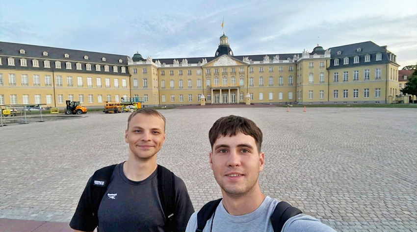
26 ЛИСТОП. 2026, 15:42Студенти групи ТТ навчають за програмою академічної мобільності в Університеті прикладних наук Карлсруе (Німеччина)
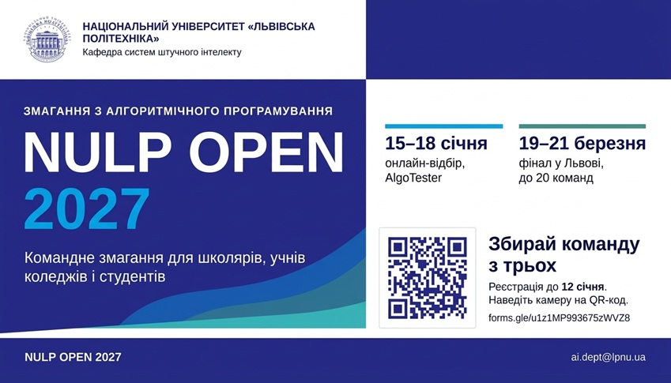
26 ЛИСТОП. 2026, 15:11Запрошуємо студентів, школярів та учнів коледжів прийняти участь в Nulp Open 2027
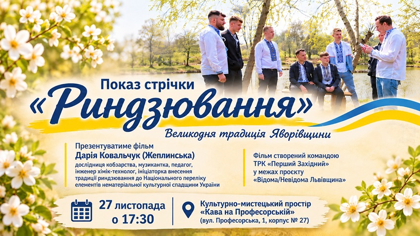
26 ЛИСТОП. 2026, 14:02«Риндзювання»: бібліотека Львівської політехніки запрошує на перегляд документального фільму про пісенну традицію Яворівщини
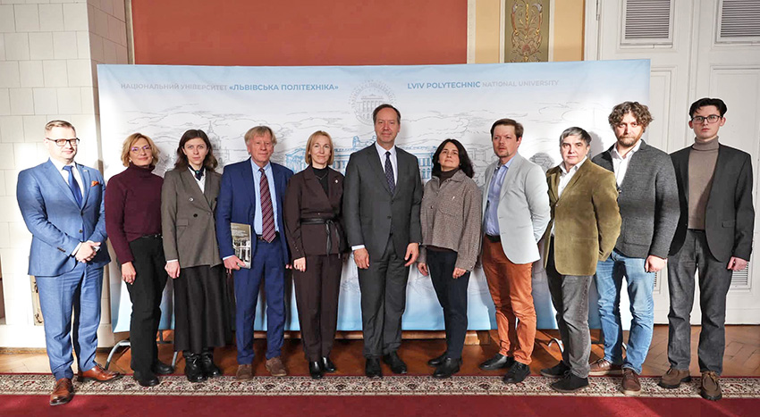
26 ЛИСТОП. 2026, 12:40У Львівській політехніці планують створити Центр реставрації пам’яток архітектури та творів мистецтва
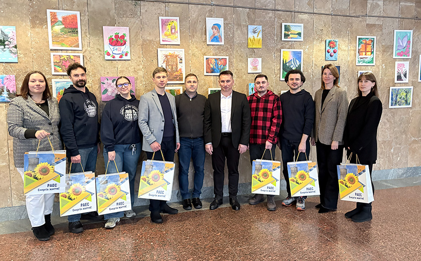
26 ЛИСТОП. 2026, 12:17Представники Львівської політехніки розповіли молоді Вараша про перспективи навчання у галузі енергетики
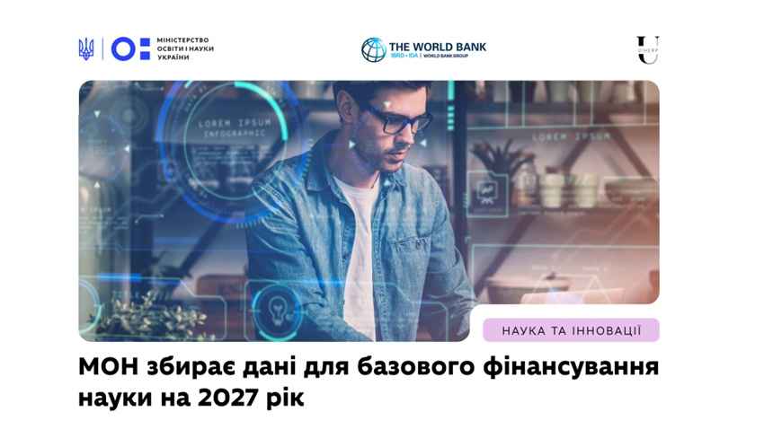
26 ЛИСТОП. 2026, 11:34МОН відкрило подання даних для розрахунку базового фінансування науки на 2027 рік
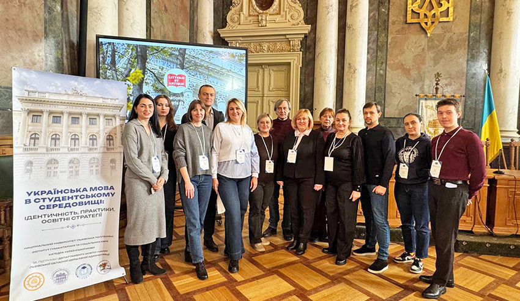
26 ЛИСТОП. 2026, 11:01В ІГСН відбулася ХІІ конференція в межах Міжнародного форуму молодих науковців «Litteris et Artibus»
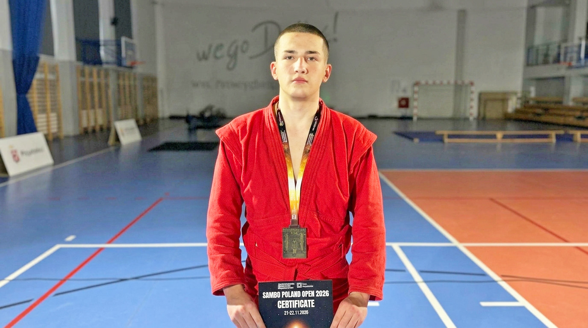
26 ЛИСТОП. 2026, 10:15Студент Львівської політехніки Олексій Савчук здобув золото на міжнародному турнірі з бойового самбо в Польщі
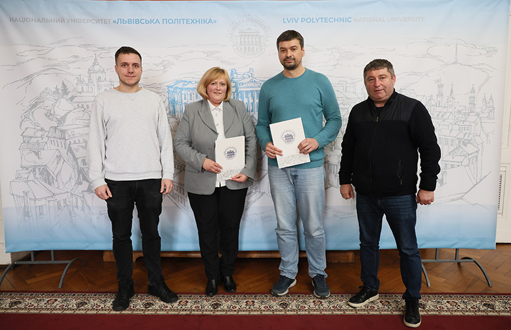
26 ЛИСТОП. 2026, 09:45Львівська політехніка та компанія «ОКО КАМЕРА» домовилися про співпрацю у сфері освіти й науки
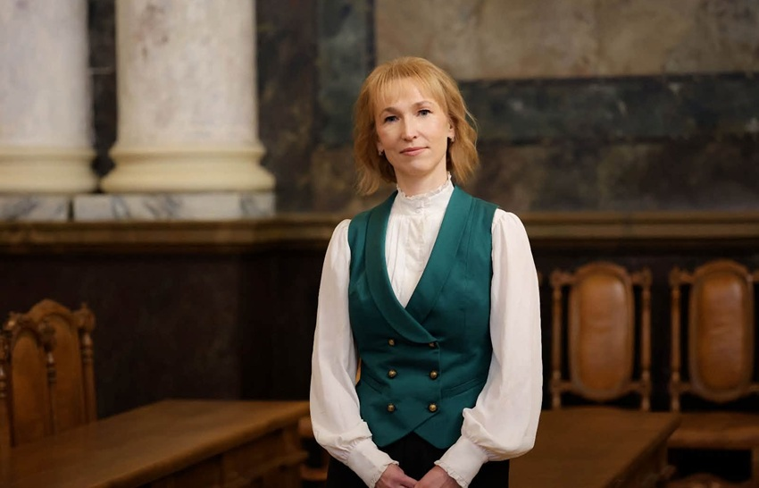
25 ЛИСТОП. 2026, 21:42